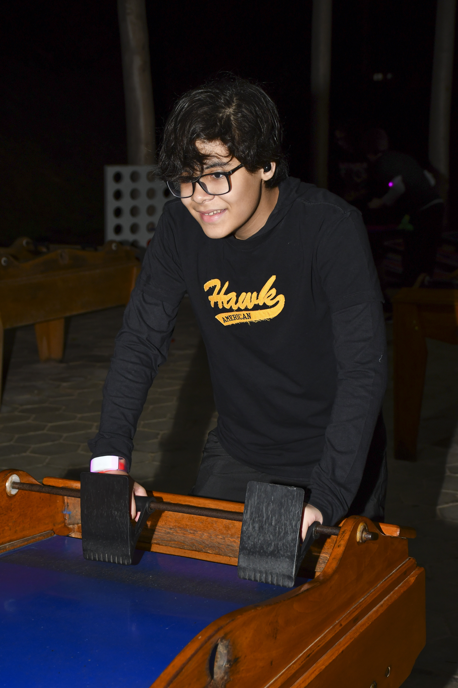
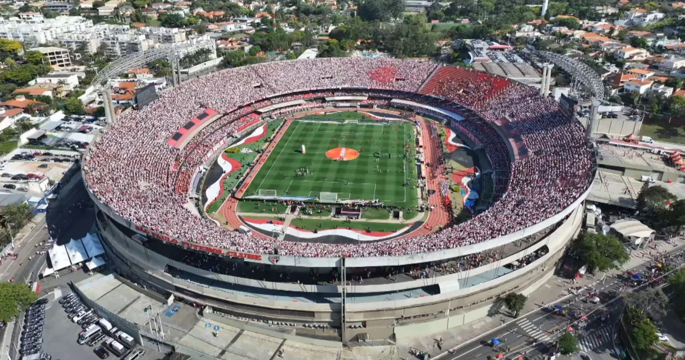
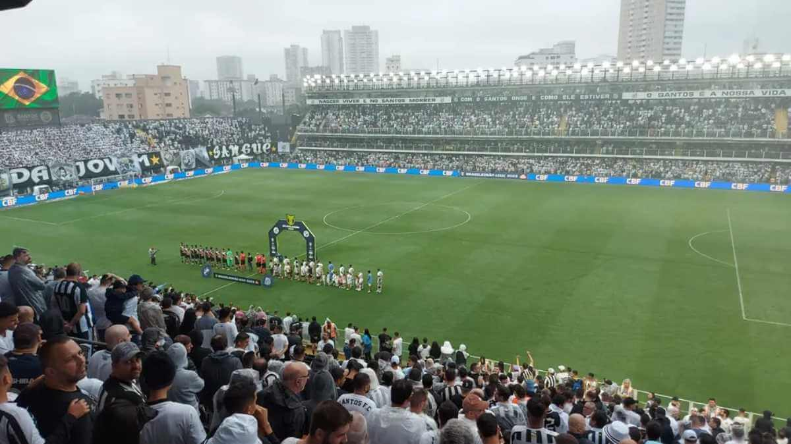
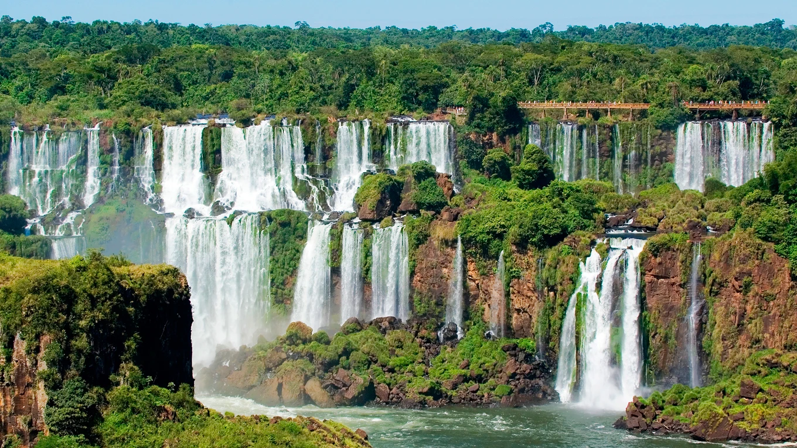
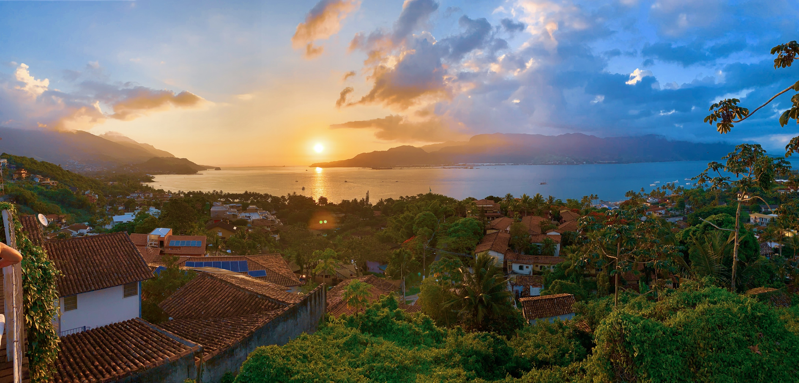
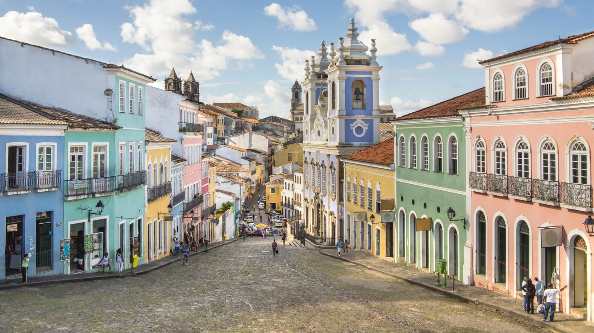
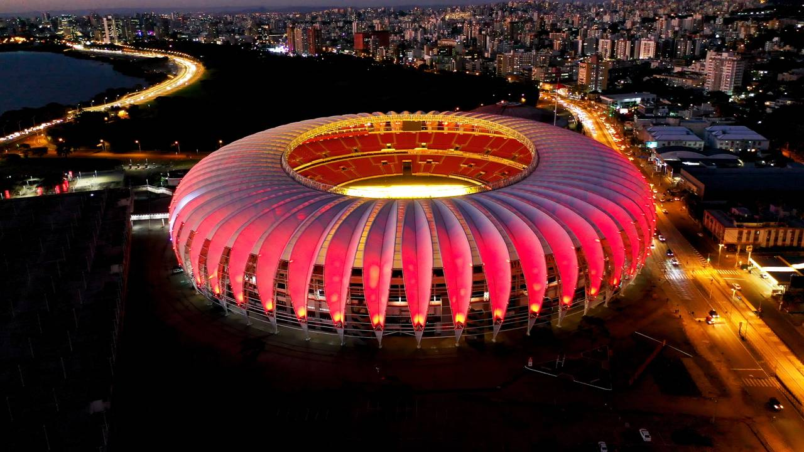
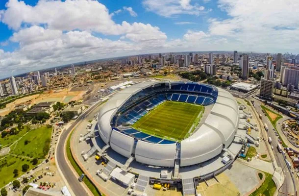

APRESENTAÇÃO PESSOAL - KAUÊ DE HARO MEIRELES!

Introdução
- meu nome é Kauê de Haro Meireles;
- tenho 15 anos;
- moro em Osasco - SP
Curiosidades
- Gosto muito de gatos, apesar de não ter um por morar em um apartamento;
- Meus jogos favoritos são ultrakill, oneshot e the bidding of isaac;
- Eu gosto de programar em SQL, html e java;
- Uma área que eu tenho muito interesse é o desenvolvimento de jogos 2d e modelagem 3d, tanto que busco aprender gamemaker e blender.
Lugares que eu gosto e que eu gostaria de conhecer
Eu ja conheci:
- Estádio Cicero Pompeu de Toledo;

Eu já visitei o Estádio CIcero Pompeu de Toledo, ou Estádio do Morumbi, quatro vezes. Três para ver jogos do são paulo (em 2019, onde no Brasileirão o São paulo e o Botafogo se enfrentavam, em 2024 para ver o duelo pelo campeonato brasileiro entre as mesmas duas equipes e em 2026 para assistir, pelo Campeonato Paulista, o jogo São paulo x Portugesa) e uma para ver o Santos jogar (em 2025, no Campeonato Paulista, onde o Santos enfrentou o São Bernardo). Para saber mais sobre o estádio, clique clique aqui.
- Estadio Urbano Caldeira;

A Vila Belmiro, ou Estádio Urbano Caldeira, é o estádio do Santos. Eu já fui lá uma vez, para assistir um jogo muito importante do Brasileirão de 2023, Santos x Vasco. Foi um jogo especial, pois ambas das equipes brigavam contra o rebaixamento (e o placar também foi digno de um ótimo jogo). O estádio pode ser pequeno, mas sua atmosféra é única. Para saber mais sobre a Vila Belmiro, clique aqui.
- Foz do Iguaçu;

Em 2024, minha família decidiu viajar para o Paraná, mais especificamente para Foz do Iguaçu, com a intenção de ver as Cataratas do iguaçu e de fazer compras no Paraguai. A beleza natural do local é incrivel, e vale muito a pena ir para lá. O Paraguai não é tão bonito, mas fazer compras lá vale a pena. Para saber mais sobre o município de Foz do Iguaçu, clique aqui.
- Beto Carrero World;

Em 2025 viajei novamente para o Sul do Brasil, dessa vez para Penha em Santa Catarina, para ir ao Beto Carrero World. É um parque de diverções com diversas atrações que valem a pena a viagem de 12 horas de carro. Para saber mais sobre o parque, clique aqui.
- Ilhabela.

Ao ir para São sebastião, eu fui para Ilhabela de balsa. Eu não pude aproveitar tanto o local, pois estava passando mal e no dia estava chovendo. Mas o letreiro é bonito e andar de balsa é legal, pelo menos. Para saber mais sobre Ilhabela, clique aqui.
Gostaria de conhecer:
- Lençois Maranhenses;

Na Capital dos azulejos e do reggae, tem um paraíso que eu amaria visitar, os Lençois Maranhenses. Conhecer as lagoas cristalinas entre as dunas seria uma experiência especial e única. Para saber mais sobre os Lençois Maranhenses, clique aqui
- Salvador;

A Bahia é um lugar cheio de cultura e tradição que eu gostaria de conhecer, mais especificamente Salvador, onde eu visitaria o bairro de Pelourinho, para entender mais a história do Brasil colônial. Para sabel mais sobre a cidade de Salvador, clique aqui.
- Fernando de Noronha;
.jpg)
O arquipelago possuí praias lindas, nomeadas já muitas vezes as melhores do mundo, como a Baía do Sancho. Também, a vida marinha da região é incrivel, sendo possível observar raias, peixes e tubarões-lixas mesmo estando no raso! E por fim, projetos ambientais situados em Fernando de Noronha são interessantes e valem a visita, como o Projeto Tamar, que cuida de Tartarugas. Para saber mais sobre Fernando de Noronha, clique aqui.
- Estadio Beira-Rio;

Na minha opinião, o Beira-Rio é um dos estádios mais bonitos do nosso país, eu gostaria muito de ir lá. Tecnologia, uma torcida empolgante e lindeza em um lugar só. Para saber mais sobre o Beira-Rio, clique aqui.
- Arena das Dunas.

Infelizmente, o Estadio que sediou jogos importantes da Copa do Mundo de 2014 não é tão utilizado para jogos de futebol, mas ele é o estádio mais lindo de nosso país. Arquitetura interessante, tecnologia, e quando ele é palco de jogos importantes, podemos observar algumas das torcidas mais fervorosas do país, as dos times nordestinos. Para saber mais sobre a Arena das Dunas, clique aqui.